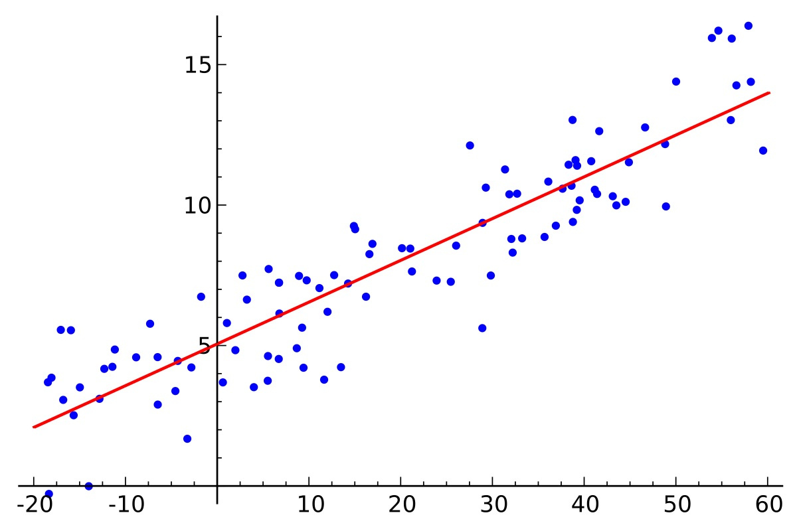
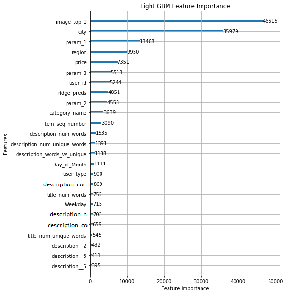

LGBM and Neural Network models
In this project, I worked with one of the largest classified advertisements website with sections devoted to general goods for sale, jobs, real estate, personals, cars for sale, and services.
The challenge was to predict demand for an online advertisement based on its full description (title, description, images, etc.), its context (geographically where it was posted, similar ads already posted) and historical demand for similar ads in similar contexts.
The data set contains text, pictures and numerical values.
Gradient Boosting Regressor model
For this model I used LightGBM, KFold for gradient boosting, SkLearn, SciPy and NLTK for TF-IDF and VGG16 from Keras to extract features from the images provided.
Feature engineering: log on price and filling the missing values; extracting day and week from the date. Filled the image column with a negative value for posts with missing images. Label encoded categorical variables. Cleaned the title and description columns and counted the number of words; vectorized title with count and description with tf-idf. Combine dense features with sparse text bag of words features.
Aggregated features: on average, how many times an ad for an item was posted, average number of days the ad was active before being re-posted or deleted and how many items the user put up for sale.
Resulted in a root mean squared error of 0.22669. Here are the most important features for the model:
Convolutional Neural Network model
With Tensorflow and Keras, I built a Bidirectional Gated Recurrent Unit neural network (BiGRU CNN) that will use word vectors for russian text from fastText.
In the preprocessing step I filled columns with missing values, with a place holder or with the mean (for continuous variables). Used the Tokenizer from Keras library on categorical variables and normalized the distribution by taking the logarithm of the numeric variables. Feature engineering: extracted the week from the activation data column and transformed classification codes into integers. Join ttile and description into one text column; tokenized the text column with a maximum of 100k words; grabbed the first 100 tokens for each row. Used the fast text common crawl for Russian to create an embedding matrix for the words found in the ads. For every word available in the data set the corresponding 300 dimension vector is added to the embedding matrix.
Model design:
Initialize the inputs for all the variables. The word sequences for the text containing title and description have a length of 100 and other variables 1. For the categorical variables, I generated an embedding layer, to turn positive idexes into dense vectors of fixed size, then applied a one-dimensional spatial dropout layer, to help emphasize independence between feature maps, and flatten the results. For the text variables, used an embedding layer, applied a spatial dropout layer and two transformations:
Applied batch normalization on concatenated text, categorical and numerical features and two densely-connected neural network layers with Relu activation function. Re-added the numerical features to the result and applied another dense layer, relu activated and, in order to get the predictions, I used another dense layer, one dimensional, activated by a sigmoid function.
The model uses Adam optimizer and root mean squared error as the loss metric. The model looks like this:

My best result with this model was a RMSE value of 0.22832